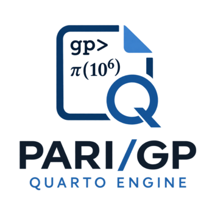

1 Introduction
PARI/GP is a computer algebra system designed for fast computations in number theory: factorizations, algebraic number theory, elliptic curves, modular forms and more. PARI-GP-ENGINE brings it to Quarto, so PARI/GP code can live in a Quarto document, run when the document is rendered, and show its results with proper syntax highlighting:
👉 https://github.com/oeistools/PARI-GP-ENGINE
The repository provides two parts that fit together but can be used apart:
| Part | What it is |
|---|---|
| Engine | A Quarto engine extension that executes {gp} cells with the gp interpreter and puts the results in the rendered document. |
| Highlighting | A KDE/Skylighting syntax definition covering the PARI/GP 2.17 function set, applied automatically, with nothing to configure. |
2 Features
- Execution.
{gp}cells run in onegpsession per document, so state carries from cell to cell, exactly as it would at thegpprompt. - Highlighting. The full function set of PARI/GP 2.17 is recognized out of the box.
- Figures. Plots exported as SVG become real Quarto figures, with captions and cross-references.
- Errors that behave. A PARI/GP error stops the render and tells you which cell failed, unless you asked for the error to be part of the document.
3 Installation
quarto add oeistools/PARI-GP-ENGINERequirements:
- Quarto ≥ 1.9, since engine extensions do not exist in earlier versions.
- PARI/GP ≥ 2.13, with the
gpexecutable on yourPATH. CI tests 2.13.3, 2.15.5 and 2.17.3. - Linux and macOS are tested in CI; Windows is implemented but not tested.
4 Usage
Set engine: pari-gp in the front matter, then write {gp} cells:
---
title: "Mersenne factors"
engine: pari-gp
format: html
---
```{gp}
M = 2^101 - 1
factor(M)
```5 A taste
Factoring \(p - 1\) for the first prime after \(10^{40}\):
p = nextprime(10^40)
factor(p - 1)10000000000000000000000000000000000000121
[ 2 3]
[ 5 1]
[ 11 1]
[ 17 1]
[ 12973 1]
[ 1821309023 1]
[56581485446137975519811 1]The class number and regulator of \(\mathbb{Q}(\sqrt[3]{2})\):
K = bnfinit(x^3 - 2, 1);
[K.no, K.reg][1, 1.3473773483293841009181878914456530463]And because the session persists, its fundamental units are still one cell away:
K.fu[Mod(x - 1, x^3 - 2)]6 License
PARI-GP-ENGINE is distributed under the MIT License. PARI/GP itself is GPL software by the PARI Group; since gp runs as an external program, its GPL does not reach the extension code.